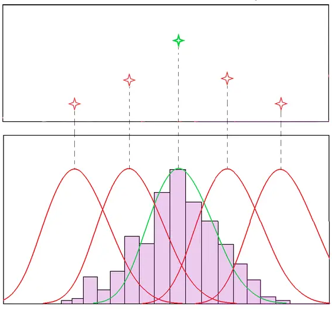
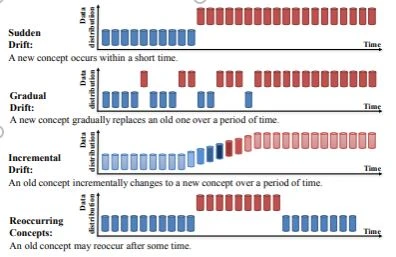
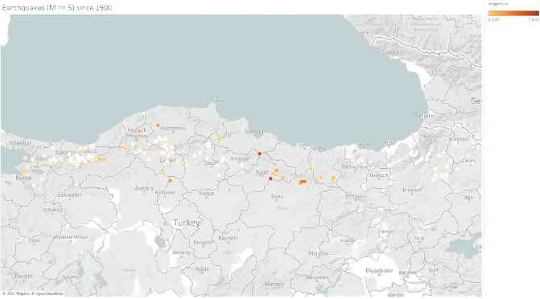

Understand the working mechanism of one of the most used statistical methods.
How to create diversified portfolio using clustering.
How to classify time series.
How to perform uncertainty quantification using polynomial chaos expansion.
How to identify anomalies with One-Class SVM.
How to identify a dynamical system from measurements.

How to detect whether your data changed or not.
We’ll look at a few handy tools that give more information about our time series.
How to handle the data with missing values?
Better portfolio management & optimization with machine learning / clustering

Modelling distribution of days between two earthquakes occurred successively.